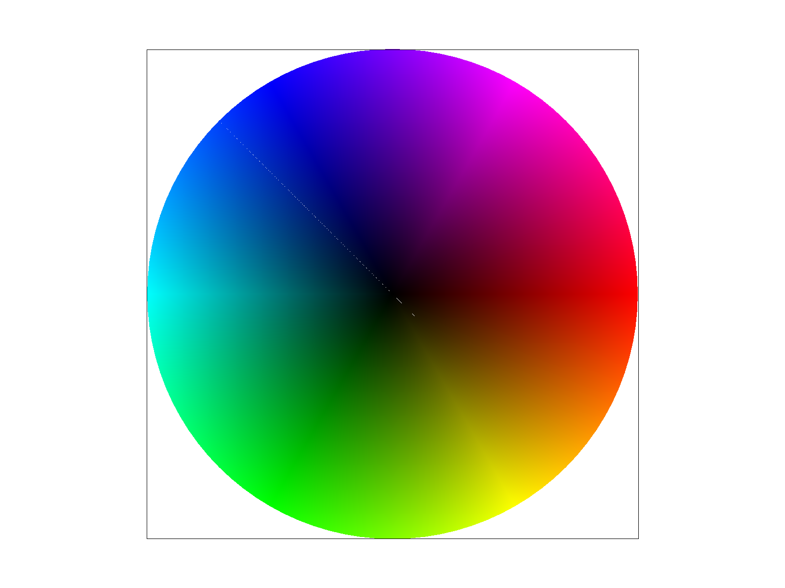
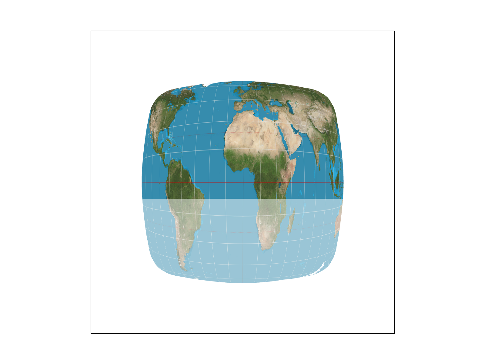
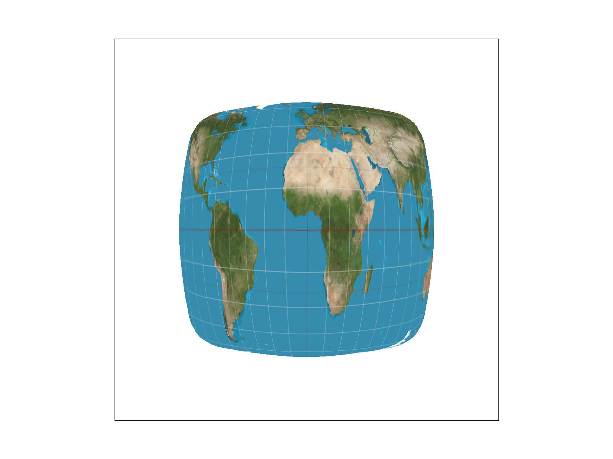

CS184/284A Fall 2026 Homework 1 Write-Up
Link to webpage: https://cal-cs184-student.github.io/hw1-beibei-lin-writeup/
Link to GitHub repository: https://github.com/cal-cs184-student/hw1-beibei-lin
Overview
Give a high-level overview of what you implemented in this homework. Think about what you've built as a whole. Share your thoughts on what interesting things you've learned from completing the homework.Task 1: Drawing Single-Color Triangles
To draw a triangle, I first find its bounding box by taking the smallest and largest \(x\) and \(y\) coordinates of its three corners \((x_0, y_0)\), \((x_1, y_1)\), and \((x_2, y_2)\):
$$\text{min\_x} = \lfloor\min(x_0, x_1, x_2)\rfloor, \quad \text{max\_x} = \lceil\max(x_0, x_1, x_2)\rceil$$ $$\text{min\_y} = \lfloor\min(y_0, y_1, y_2)\rfloor, \quad \text{max\_y} = \lceil\max(y_0, y_1, y_2)\rceil$$
Next, I loop through every pixel center \((x + 0.5, y + 0.5)\) inside this box. For each pixel center, I use the three edge line functions to test if the point sits on the inside of all three edges:
$$L_i(x, y) = -(x - x_i)(y_{i+1} - y_i) + (y - y_i)(x_{i+1} - x_i)$$
If all three edge test results have the same sign (either all \(\ge 0\) or all \(\le 0\)), the pixel center is inside the triangle. Checking both positive and negative signs allows the code to work no matter if the triangle points are given in clockwise or counter-clockwise order. If the pixel center is inside, I call rasterize_point(x, y, color) to fill in the color.
Efficiency Analysis: This algorithm is no worse than checking every sample in the bounding box because it only loops through pixels between \(\text{min\_x}\) to \(\text{max\_x}\) and \(\text{min\_y}\) to \(\text{max\_y}\). It never tests pixels outside of this bounding box area, so it checks the exact minimum rectangle needed. This keeps the runtime bounded tightly to the size of the triangle rather than the whole screen.

svg/basic/test4.svg rendered with default viewing parameters. The pixel inspector (toggle with Z) highlights jaggies along the narrow edge of the red triangle.
Task 2: Antialiasing by Supersampling
Algorithm & Data Structures: Supersampling antialiases high-frequency edges by sampling each pixel at multiple sub-locations and averaging the colors together. To implement this, I updated sample_buffer to hold \(\text{width} \times \text{height} \times \text{sample\_rate}\) color elements. During triangle rasterization, each pixel is divided into a \(\sqrt{\text{sample\_rate}} \times \sqrt{\text{sample\_rate}}\) sub-grid. I test whether each sub-sample point \((x + \frac{i + 0.5}{\sqrt{\text{sample\_rate}}}, y + \frac{j + 0.5}{\sqrt{\text{sample\_rate}}})\) lies inside the triangle and store its color at its unique index in sample_buffer. Finally, in resolve_to_framebuffer(), I average all sub-samples belonging to a pixel to determine its final display color.
Pipeline Modifications:
set_sample_rate()&set_framebuffer_target(): Dynamically resizesample_bufferwhenever the window dimensions or sample rate change.clear_buffers(): Clears both the main framebuffer andsample_bufferto white at the start of every frame.fill_pixel(): Fills all sub-samples of a single pixel with the same color so points and lines draw correctly.resolve_to_framebuffer(): Downsamples high-resolution sub-samples into single 8-bit RGB display values by computing their average.
Why Supersampling is Useful: Supersampling removes visual jaggies and prevents thin geometric features from disappearing. When a narrow triangle tip barely misses a single pixel center, regular 1x sampling skips the pixel entirely, creating disconnected floating shapes. With 16x supersampling, even if only 2 out of 16 sub-samples fall inside the triangle, the pixel renders as a light red tint instead of disappearing, creating a smooth visual line.


Task 3: Transforms
Implementation: I implemented the three 2D transformation functions in src/transforms.cpp using \(3 \times 3\) homogeneous coordinate matrices. The translate(dx, dy) function builds a translation matrix with \(dx\) and \(dy\) in the rightmost column, scale(sx, sy) scales the diagonal terms, and rotate(deg) converts input degrees to radians (\(rad = deg \times \frac{\pi}{180}\)) to form the 2D rotation matrix (\(\cos\theta\) and \(\sin\theta\)).
Custom Robot Pose: In my_robot.svg, I designed an upside-down handstanding cubeman performing a yoga headstand/handstand pose. To achieve this, I applied a rotate(180) transformation to the primary root group, turning the entire cubeman upside down. I rotated both arm groups by \(90^\circ\) and \(-90^\circ\) respectively so they plant firmly on the ground to support the torso, while extending both legs straight up into the air. I also updated the entire color palette to a vibrant emerald green (#00CC66).

my_robot.svg)Task 4: Barycentric Coordinates
Explanation of Barycentric Coordinates: Barycentric coordinates express any point inside a triangle as a weighted linear combination of the triangle's three vertices: \(p = \alpha p_0 + \beta p_1 + \gamma p_2\), where \(\alpha + \beta + \gamma = 1\) and \(\alpha, \beta, \gamma \ge 0\). The weights \(\alpha, \beta, \gamma\) represent the relative proximity of the point to vertices \(p_0\), \(p_1\), and \(p_2\) respectively. This coordinate system enables smooth spatial interpolation of vertex attributes—such as RGB colors, texture coordinates, and surface normals—across the interior of a triangle.
For example, if vertex \(p_0\) is pure Red, \(p_1\) is pure Green, and \(p_2\) is pure Blue, a point near vertex \(p_0\) will have a high \(\alpha\) weight and render predominantly red. At the triangle's center (\(\alpha = \beta = \gamma = \frac{1}{3}\)), all three colors blend equally into gray.

svg/basic/test7.svg at sample rate 1).Task 5: "Pixel sampling" for texture mapping
Concept & Implementation: Pixel sampling maps screen space coordinates to texture coordinates \((u, v) \in [0, 1] \times [0, 1]\) to sample texel colors from a 2D texture map. During textured triangle rasterization, I compute barycentric coordinates \((\alpha, \beta, \gamma)\) for each sample point to interpolate its exact texture coordinate \(uv = \alpha uv_0 + \beta uv_1 + \gamma uv_2\).
Sampling Methods:
- Nearest-Pixel Sampling: Maps the continuous \((u, v)\) coordinate directly to the single nearest texel center \((tx, ty) = (\lfloor u \cdot w \rfloor, \lfloor v \cdot h \rfloor)\). While computationally fast, it causes blocky pixelation along high-frequency texture boundaries.
- Bilinear Sampling: Identifies the four surrounding texels centered around \((u, v)\) and performs a 2D weighted linear interpolation using fractional horizontal (\(s\)) and vertical (\(t\)) offsets. This produces smooth transitions and antialiases texture details.


Comparison & Discussion: The visual disparity between nearest and bilinear sampling is largest when the texture resolution is low relative to screen display pixels (magnification) or when viewing detailed features at sharp angles. Under 1x sampling, nearest sampling displays harsh blocky borders and broken features. Bilinear sampling smooths these features out by averaging surrounding texels, rendering clean linear structures and continuous gradients even at low sample rates.
Task 6: "Level sampling" with mipmaps for texture mapping
Concept & Implementation: Level sampling prevents texture aliasing (moiré patterns and high-frequency noise) caused by minification—when many texture pixels (texels) map onto a single screen pixel. We compute pre-filtered lower-resolution texture representations called mipmaps.
To pick the correct mipmap level for a sample point \((x, y)\), we compute texture coordinate differentials with respect to adjacent screen pixels \((x+1, y)\) and \((x, y+1)\). By calculating difference vectors \(\left(\frac{du}{dx}, \frac{dv}{dx}\right)\) and \(\left(\frac{du}{dy}, \frac{dv}{dy}\right)\) and scaling them by the full-resolution texture width and height, we compute the maximum footprint length \(L = \max(L_x, L_y)\) and determine the continuous mipmap level \(D = \log_2(L)\).
- L_ZERO: Samples directly from full-resolution Level 0.
- L_NEAREST: Rounds \(D\) to the nearest integer level \(\text{round}(D)\) and samples from that single MipLevel.
- L_LINEAR (Trilinear Filter): Computes sample colors at \(\lfloor D \rfloor\) and \(\lceil D \rceil\), then performs a linear interpolation across mipmap levels using weight \(t = D - \lfloor D \rfloor\).
Tradeoffs Analysis:
| Technique | Speed (FPS) | Memory Usage | Antialiasing Power |
|---|---|---|---|
| Pixel Sampling (Bilinear) | Fast. Reads 4 adjacent texels per sample. | Minimal. Only requires base texture memory. | Effective for magnification; weak against high-frequency minification aliasing. |
| Level Sampling (Mipmapping) | Very Fast. Trilinear requires 8 texel reads, but mipmap levels fit better in memory cache. | Increases memory footprint by \(\approx 33\%\) (\(1 + \frac{1}{4} + \frac{1}{16} + \dots = \frac{4}{3}\)). | High power against minification aliasing and moiré patterns over distant geometric surfaces. |
| Supersampling | Slowest. Multiplies rasterization, memory write, and texture lookup pass count by \(N\) (e.g., 16x). | High. Increases sample buffer size linearly with sample count (\(N \times\)). | Highest all-around power. Antialiases both texture interiors and geometric silhouette boundaries. |

